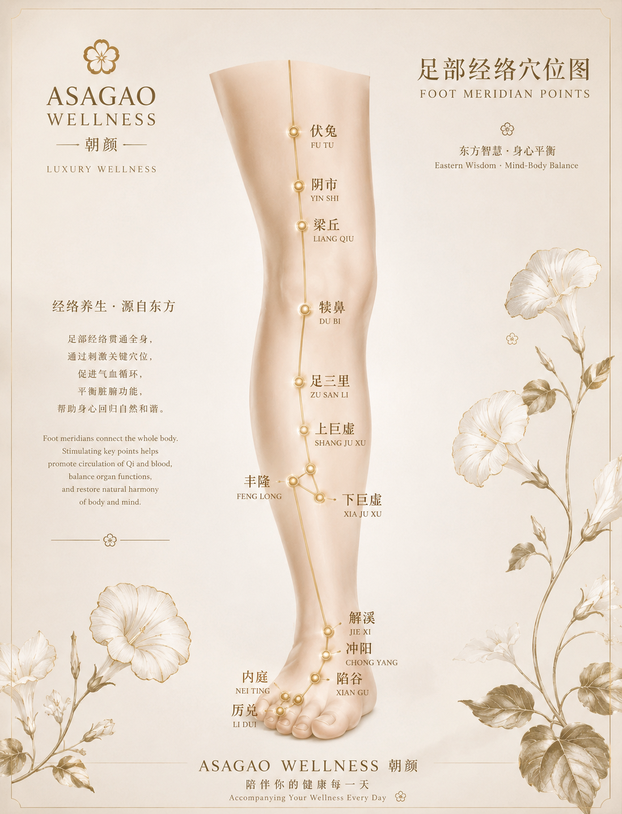
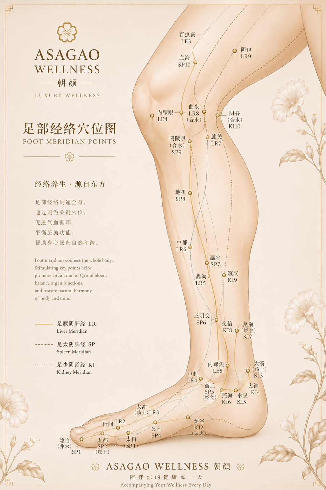
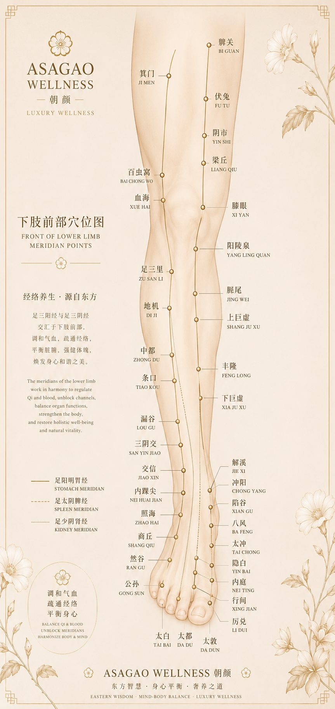
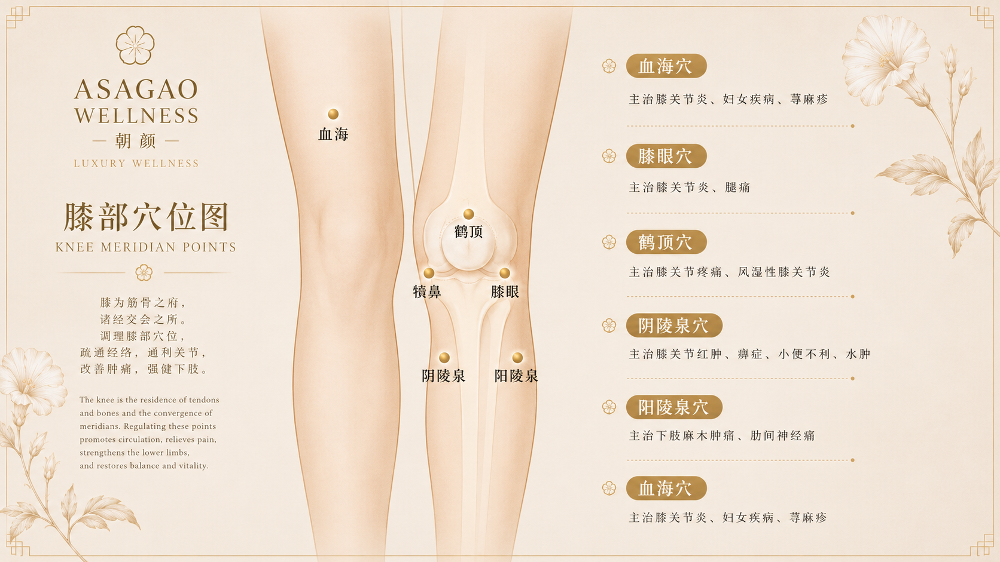

A lower-body treatment supporting lightness, circulation, physical grounding, and a renewed sense of ease through slow, mindful therapeutic touch.
Inspired by Eastern healing philosophy and quiet luxury wellness, Front Leg Therapy focuses on the anterior legs as an important pathway for movement, stability, circulation, and grounded body awareness.

Front leg meridian care · Circulation · Grounding · Restorative flow

ASAGAO WELLNESS · Quiet luxury lower-body care

Leg therapy · Energy flow · Physical ease · Mind-body balance

Leg therapy · Energy flow · Physical ease · Mind-body balance